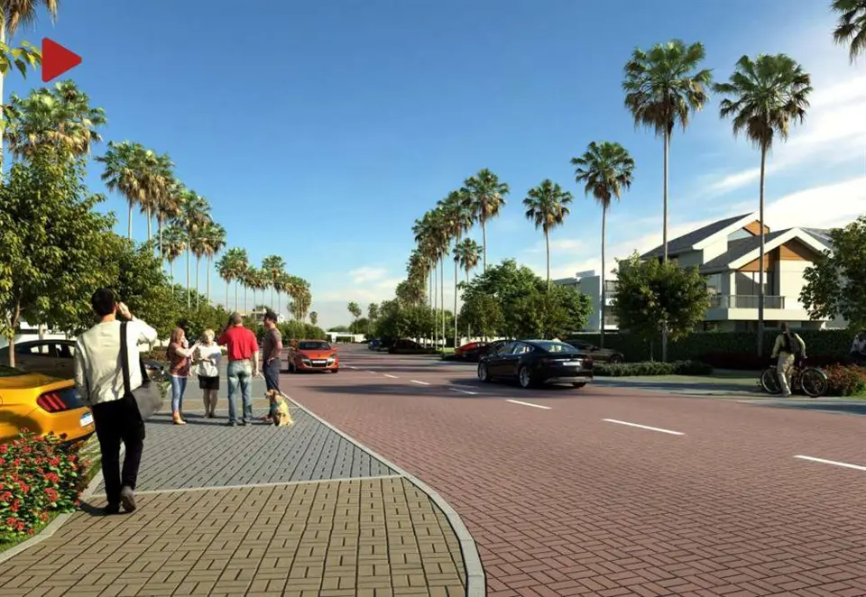

Imagens


Galeria
Imagens ilustrativas, de caráter artístico, conforme material da incorporadora.

Lotes no Recreio dos Bandeirantes
Casas e Terrenos em condomínio fechado com um clube exclusivo e acesso ao Pontal Beach Point, sua “sala vip” na praia do Pontal. Tudo isso planejado para oferecer o máximo de qualidade de vida para você e sua família!Em uma região tranquila, perto da praia e de toda a infraestrutura de comércio e serviços do Recreio. Os moradores terão à disposição o Pontal Beach Point, uma área de apoio na Praia do Pontal para práticas de esportes outdoor com bicicletário, pranchário, vestiários, duchas, lockers e vans para deslocamento do seu condomínio até a praia e vice-versa.
Metragens, tipologias e disponibilidade conforme material oficial da incorporadora, sujeitos a alteração sem aviso. Valores e condições confirmados na tabela vigente. Seleção e atendimento: Paulo Cotrim, CRECI-RJ 77677-F.
Imagens ilustrativas, de caráter artístico, conforme material da incorporadora.